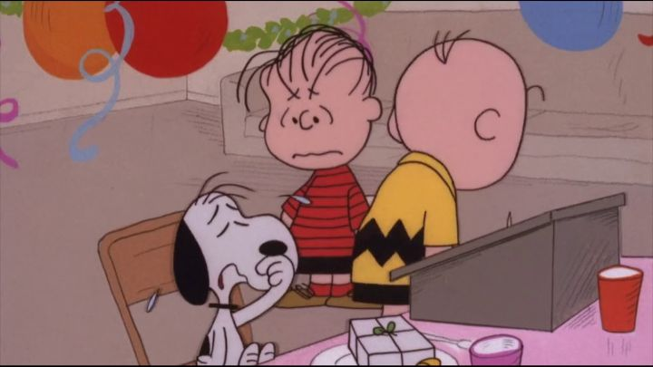

I've previously written about how much I love Charlie Brown, Snoopy, and the Peanuts gang. They've appeared in countless animated films and specials, and their first theatrical film ("A Boy Named Charlie Brown," 1969) remains my favorite, best representing the tone of humor of the original comics, while having some fun in its songs and film as a medium. "Snoopy, Come Home," released in 1972, was their second theatrical film. I grew up with both movies, so I have a soft spot for this one too. As the title suggests, it has a much larger emphasis on America's favorite beagle, providing a much more traditional adventure and series of events. But the tone always bothered me a little: "A Boy," and perhaps all the holiday specials, each seemed to capture the magic and sincerity a little better than everything else did. The story assumes you know all the characters. Snoopy is Charlie Brown's dog, an unusual dog that acts like all the other kids, but with even more quirks. In the early scenes, we see Snoopy subject to feeling unwanted: Charlie grows annoyed with how Snoopy goes out every night as he pleases, but still needs to be fed every day. Lucy uses him as a boxing partner, but doesn't appreciating his fighting style. Linus doesn't want to share his blanket, leading to an increasingly-nasty fight between them. And Snoopy becomes aware of new signs that say "No Dogs Allowed" in public areas, like the beach or the local library. ... Sure, Snoopy's kind of a nuisance in all of these situations, but it's still rough to see him get this treatment.Suddenly, Snoopy receives a mysterious letter from Lila, a girl in a hospital, asking him to visit. Without hesitation, Snoopy packs his bags and takes Woodstock along for the journey. Charlie and his friends are left behind, wondering who Lila is, and whether they went too far against Snoopy. Charlie's reaction when he learns that Lila was Snoopy's original owner, not him, is priceless. But would the dog really leave his friends behind for Lila? Snoopy's journey from town to town, taking place over several days, makes for a good adventure. He was going to take the bus or the train, but again, "No Dogs Allowed" seems to follow everywhere he goes, forcing him to walk and camp along the way. There are new original songs echoing throughout the movie, not sung by the cast, but by some unseen 70's chorus; perhaps not natural, but the songs are memorable, from the theme song ("Snoopy, Come Home"), "No Dogs Allowed," "The Best of Buddies," and "Do You Remember Me." What bothered me as a kid, though, was how poor Snoopy gets put through the ringer in this movie. Peanuts had always been a little cruel, but only in a mild way. Here, it's worse, especially when Snoopy travels outside the neighborhood that's long accepted him, for better or worse. I kept wanting to reach out and give the poor beagle a hug... at least he had his inseparable friend Woodstock to make the whole ordeal better. As an adult rewatching it, I became more aware of the metaphor of Snoopy's owner(s) being compared to clingy and manipulative lovers, another uncomfortable element.Otherwise, there are some exciting moments and good jokes, and the whole prospect of Snoopy possibly leaving the gang for good makes it feel more significant than other movies. The animation and visuals are simple, exactly as they should be, but also notably not as experimental as "A Boy" was with the medium. On Bluray disc, it's worth mentioning that the picture quality holds up a little better than the other movies (my set included "A Boy," "Bon Voyage, Charlie Brown," and "Race for Your Life, Charlie Brown"), but still has a not of dirt, scratches, and color grain noise. "Snoopy, Come Home" can be sad at times, but I'm certain most Peanuts fans will appreciate the story and the adventure of the comic's most popular character here.
- "Ani" More reviews can be found at : https://2danicritic.github.io/ Previous review: review_Sleeping_Beauty Next review: review_Snow_White_and_the_Seven_Dwarfs